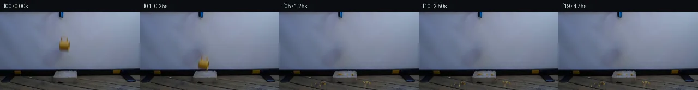

![首帧]()

Round 00
2026-11-05T14:11:22.690406+00:00像素候选变化代码 +422/−0inspection 更新
pixels 129960aafd62fc85 · code 344ca527b666fcc1
查看本轮 generate.py 真实 diff
--- previous/generate.py
+++ current/generate.py
@@ -0,0 +1,422 @@
+"""Pixel-only continuation of the supplied mug drop, with analytic fragment motion.
+
+No models, external imagery, network calls, or rendering engines are used.
+"""
+from pathlib import Path
+import json
+import math
+
+import cv2
+import numpy as np
+from PIL import Image, ImageDraw
+from scipy.ndimage import gaussian_filter, binary_dilation, binary_erosion
+from scipy.sparse import lil_matrix
+from scipy.sparse.linalg import spsolve
+
+from artifact_io import save
+
+ROOT = Path(__file__).resolve().parent
+W, H, S = 256, 144, 4
+FPS = 4
+G = 780.0
+RNG = np.random.default_rng(125)
+SOURCE = np.asarray(Image.open(ROOT / 'first_frame.png').convert('RGB'))
+
+
+def harmonic_background():
+ """Interpolate only the initial object footprint using surrounding screen pixels."""
+ yy, xx = np.mgrid[:H, :W]
+ hole = (((xx - 118.1) / 13.3) ** 2 + ((yy - 59) / 18.3) ** 2) < 1
+ # Include the initially blurred lower-right edge.
+ hole[68:75, 121:130] = True
+ hole = binary_dilation(hole, iterations=1)
+ coords = np.argwhere(hole)
+ index = np.full((H, W), -1, dtype=int)
+ index[hole] = np.arange(len(coords))
+ matrix = lil_matrix((len(coords), len(coords)), dtype=float)
+ rhs = np.zeros((len(coords), 3))
+ for row, (y, x) in enumerate(coords):
+ matrix[row, row] = 4
+ for dy, dx in [(0, 1), (0, -1), (1, 0), (-1, 0)]:
+ ny, nx = y + dy, x + dx
+ if hole[ny, nx]:
+ matrix[row, index[ny, nx]] = -1
+ else:
+ rhs[row] += SOURCE[ny, nx]
+ background = SOURCE.astype(float).copy()
+ background[hole] = spsolve(matrix.tocsr(), rhs)
+ noise = RNG.normal(0, .65, (H, W, 1))
+ background += noise * hole[..., None]
+ return np.clip(background, 0, 255), hole
+
+
+BACKGROUND, ERASE_MASK = harmonic_background()
+Y0, Y1, X0, X1 = 40, 78, 104, 133
+PATCH = SOURCE[Y0:Y1, X0:X1].astype(float)
+BG_PATCH = BACKGROUND[Y0:Y1, X0:X1]
+PY, PX = np.mgrid[Y0:Y1, X0:X1]
+
+
+def extract_mug():
+ """Recover a soft silhouette and a premultiplied foreground from color differences."""
+ chroma = PATCH[..., 0] - PATCH[..., 2]
+ bg_chroma = BG_PATCH[..., 0] - BG_PATCH[..., 2]
+ reference = np.interp(PY[:, 0], [40, 43, 49, 54, 58, 62, 65, 68, 71, 77],
+ [65, 65, 69, 82, 97, 101, 88, 73, 70, 70])[:, None]
+ alpha = np.clip((chroma - bg_chroma) / (reference - bg_chroma), 0, 1)
+ domain = (((PX - 118) / 11.7) ** 2 + ((PY - 59) / 17.4) ** 2 < 1)
+ domain |= ((PX >= 123) & (PX <= 128) & (PY >= 60) & (PY <= 73))
+ alpha *= domain
+ alpha[alpha < .035] = 0
+ # Carry the actual photograph's muted yellow glaze and dark bottom shading.
+ premult = PATCH - BG_PATCH * (1 - alpha[..., None])
+ premult = np.minimum(np.maximum(premult, 0), alpha[..., None] * 255)
+ return alpha, premult
+
+
+MUG_ALPHA, MUG_PM = extract_mug()
+CENTER = np.array([118.0, 59.0])
+IMPACT_ANGLE = math.radians(10)
+V0 = 45.0
+IMPACT_DY = 43.0
+IMPACT_TIME = (-V0 + math.sqrt(V0 ** 2 + 2 * G * IMPACT_DY)) / G
+
+
+def affine_layer(pm, alpha, center, location, angle=0, sx=1, sy=1):
+ """Warp a source-local premultiplied sprite into a 4x canvas."""
+ c, s = math.cos(angle), math.sin(angle)
… diff truncated; 335 more lines …